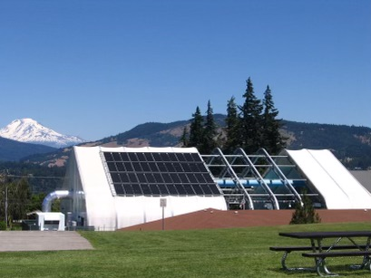

Financial Management
265% Impending Rate Hike
Everyone loves parks, but should that mean a 265% rate hike for one of the agencies that manages them?
Hood River Valley Parks and Recreation District has stated that they intend to ask voters for a permanent rate increase, from $0.34/1000 assessed value to $1.24/1000 assessed value.
This is a permanent increase of 265%.
NO to Rate Hike
I do not support a permanent 265% rate increase for Hood River Valley Parks and Recreation District at this time.
I know Hood River families work hard for their incomes and that many have felt the stress of inflation over the past few years.
I believe Hood River deserves an accurate assessment of how much property tax revenue is actually being spent on park administration and maintenance in Hood River County by all agencies combined.
Hood River Valley Parks and Recreation District needs to invest in vetting funding options with the community rather than relying solely on paid administrators and elected officials to make the decision for us as to what is the best option to put on the ballot.
Why Are Rates Rising?
Hood River Parks & Rec Seeks Stable Funding

Columbia Gorge News
December 21, 2021
"The Hood River City Council was approached by the Parks and Recreation District, who is seeking their support in increasing property tax rates for the local parks." Read more...
In the article above, several claims are made to support a proposed Hood River Valley Parks and Recreation District’s 265% permanent rate increase.
- Northern Wasco County Parks and Recreation District gets $1.00/1000 assessed value.
- Madras Aquatic Center & Recreation District gets $1.30/1000 assessed value.
- Bend Park and Recreation District gets $1.60/1000 assessed value.
- The article presents a permanent rate hike for Hood River Valley Parks and Recreation District via dissolution/reformation of the district at a higher tax rate as our only option for increasing public funding of the District.
While technically the numbers in the article are correct, they are not the PERMANENT tax rates of those Districts.
Hood River Valley Parks and Recreation District is arguing for a 265% permanent tax rate increase by comparing their current permanent rate to the rates of Districts that include additional funding from fixed term local option levies and bond measures. As the term “fixed term” suggests, these methods of funding are not permanent taxes.
Sources: Northern Wasco County Parks & Recreation District Proposed Budget Fiscal Year 2022 - 2023
The actual permanent tax rate of Northern Wasco County Parks and Recreation District is $0.6799/1000 assessed value. The balance of the $1.00 is the tax assessed to repay a $3.7 million dollar general obligation bond (GO bond) that voters in the Northern Wasco County Parks and Recreation taxing district passed in 2013 to renovate their swimming pool.
The actual permanent tax rate of Madras Aquatic Center & Recreation District is $0.25/1000 assessed value. In 2004, voters approved forming a new special district to build and manage a new aquatic center. The permanent tax rate of $0.25/1000 for operations was established at that time. It was purposely set low to increase the likelihood that voters would approve forming the special district that would become Madras Aquatic Center & Recreation District. In 2004, Madras voters also approved a $8.1 million dollar 20 year bond measure for a new aquatic center which has been repaid at a rate of $0.69/1000 assessed value. The new Madras aquatic center opened in 2008. Madras Aquatic Center & Recreation District soon ran into financial difficulty and put a 5 year local option levy on the 2012 ballot to collect more taxes at a rate of $0.40/1000 assessed value. This levy failed in 2012, but passed in 2013. It has been renewed twice since then, in 2017 and in 2022. In addition, Madras Aquatic Center & Recreation District borrowed $200,000 from Jefferson County in 2019, and sought up to $250,000 in additional funds from the County to remodel the bathrooms in the 11 year old aquatic center.
Sources: The Bend Bulletin and The Madras Pioneer
The actual permanent tax rate of Bend Park and Recreation District is $1.461/1000. Bend Park and Recreation District is also collecting revenues from a local option levy passed by voters in 2012. Bend Park and Recreation District manages 3035+ acres of land and 1000+ recreational programs. It is the only parks and recreation agency in the Bend area.
Sources: Bend Parks & Rec, Bend Metro Park and Recreation District Bond Measure (November 2012)
What We Pay
At this time, the taxpayers of Hood River County are supporting the administration of four separate parks departments:
- Hood River City Parks
- Hood River County Parks
- Port of Hood River Parks
- Hood River Valley Parks and Recreation District.
So how much are we paying for parks in Hood River County anyway?
It is obviously more than $0.34/1000 assessed value.
What Should We Do?
I believe a fixed term bond measures are the most transparent way to finance capital projects such as a new aquatic center.
We borrow money to build and we pay it off.
I believe fixed term bond measures and local option levies are a fairer and more democratic method of funding, and that they ensure that successive generations will get to vote on what to support and at what financial level.
They allow communities to retain some control over property tax rates and hold underperforming public agencies accountable.
Per their minutes, Hood River Valley Parks and Recreation District is exploring the idea of a foundation.
This is an excellent idea for those able and willing to support the District above and beyond what is obligated by property tax rates. A foundation would be able to support access to recreational programs and facilities for low and fixed income Hood River residents.